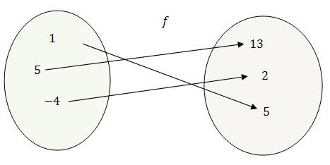
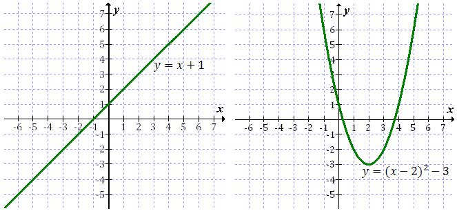

Funkcje można zapisywać na wiele różnych sposobów.
W
przykładach ze wstępu opisywaliśmy
funkcje słownie. Istnieją jednak inne - prostsze i wygodniejsze sposoby.
Graf
Proste funkcje można łatwo przedstawiać w formie rysunkowej - za pomocą grafu.
Graf składa się z dwóch zbiorów. W pierwszym znajdują się argumenty \(x\), a w
drugim wartości \(y\). Strzałki pokazują sposób działania funkcji (przyporządkowują każdemu
argumentowi dokładnie jedną wartość).
Poniżej znajduje się przykład funkcji
przedstawionej za pomocą grafu: 
Więcej przykładów grafów znajdziesz w rozdziale
Wstęp i przykłady wprowadzające.
Tabelka
W górnym wierszu tabelki wpisujemy argumenty \(x\), a w dolnym wartości \(y\) jakie
dla niech otrzymamy.
Dla funkcji przedstawionej powyżej za pomocą grafu, tabelka wyglądałaby w
sposób następujący:
| \(x\) |
\(-4\) |
\(1\) |
\(5\) |
| \(y\) |
\(2\) |
\(5\) |
\(13\) |
Tabelkę często wykorzystuje się podczas rysowania wykresów funkcji. Gdy znamy wzór funkcji,
np. \(y = 3x\), to możemy sporządzić następującą tabelkę:
| \(x\) |
\(-2\) |
\(-1\) |
\(0\) |
\(1\) |
\(2\) |
\(3\) |
| \(y=3x\) |
\(-6\) |
\(-3\) |
\(0\) |
\(3\) |
\(6\) |
\(9\) |
Dolny rząd tabelki uzupełniamy podstawiając do wzoru funkcji pod \(x\)-a odpowiednie
argumenty z pierwszego rzędu. Więcej informacji jak to dokładnie robić znajdziesz w
tym rozdziale.
Wykres
Wykres funkcji rysujemy w układzie współrzędnych.
Często przed
narysowaniem wykresu wyznaczamy punkty w postaci \((x, y)\), które do niego należą.
Poniżej znajdują się przykładowe wykresy funkcji: 
Wzór
Jest to najlepszy sposób prezentowania funkcji.
Mając dany wzór funkcji możemy
zawsze narysować jej wykres, sporządzić tabelkę, a co najważniejsze - określić wszystkie własności
danej funkcji.
Istnieją dwa równoważne sposoby zapisywania wzorów funkcji. Można to zrobić w
taki sposób:
\[y = \text{[tu piszemy wzór funkcji]}\] albo w taki: \[f(x) = \text{[tu piszemy
wzór funkcji]}\] Wykresy funkcji, które narysowałem powyżej, podpisałem przy wykorzystaniu
pierwszego sposobu. W przykładach ze
wstępu wykorzystałem kilka razy drugą
metodę zapisu, np. \(f(\text{Bartek}) = \text{piłka}\).